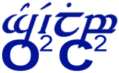

Copyright © 2003 Joerg K. Wegner
License
GNU Free Documentation License (FDL)
Copyright (c) Joerg K. Wegner, 2003. Permission is granted to copy, distribute and/or modify this document under the terms of the GNU Free Documentation License, Version 1.2 or any later version published by the Free Software Foundation; with no Invariant Sections, no Front-Cover Texts, and no Back-Cover Texts. A copy of the license is included in the section entitled "GNU Free Documentation License"
Documents
PS, PDF, RTF versions of this document are available.
Plucker E-Book versions: HiRes-color, HiRes-grayscale, HiRes-black/white, color, grayscale, black/white
| Next | ||
| Preface |